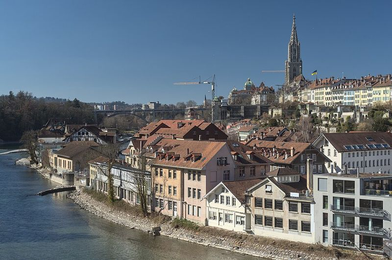

Bern

Sat 22 May · pass day 1
Land in Zurich, settle into Bern
- ~07:00 Land at Zurich airport; activate the pass
- Direct train to Bern, ~1 hr 15; leave the bag at the hostel
- Must Old Town: the arcades, Zytglogge clock tower (the figures move just before every hour), Cathedral and its tower view
- Must Federal Palace terrace over the Aare
- Nice Bear Park, then the Rose Garden for sunset over the old town
- Early night to beat jet lag
Bern is in the middle of everything: Interlaken 50 min, Lucerne 1 hr, Basel 55 min, Zermatt ~2 hrs. Buy Sunday's food today — Swiss shops close on Sundays (station shops stay open).